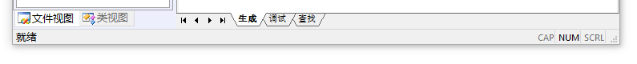

# 常用控件
控件的消息通知
当控件有事件发生时，他会向父窗口发送通知消息。最常发生的事件就是鼠标单击了，此时控件会向父窗口发送 BN_CLICKED 消息，实际上也就是给父窗口发送 WM_COMMAND 消息，在 wParam 参数中包含有通知消息码（鼠标单击的通知消息码就是 BN_CLICKED）和控件 ID，IParam 参数中包含了控件的句柄。在 MFC 消息映射机制中，消息就是由三部分组成：消息值，wParam 参数，IParam 参数。
控件消息映射宏的格式：
ON_通知消息码 (nID, memberFun)
nID 参数是控件的 ID，memberFun 参数是消息处理函数名。
例如 ON_BN_CLICKED(IDC_PMAC_BUTTON, &LoginDlg::OnBnClickedPmacButton)
消息处理函数声明：
afx_msg void memberFun();
# 静态文本框 Static Text
如果我们想在程序中动态创建静态文本框，而不是像前面那样直接从 Toolbox 中拖到对话框模板上，那么就需要使用 CStatic 类的成员函数 Create。Create 函数的原型如下：
virtual BOOL Create( | |
LPCTSTR lpszText, | |
DWORD dwStyle, | |
const RECT& rect, | |
CWnd* pParentWnd, | |
UINT nID = 0xffff | |
); |
-
lpszText：指定要在控件中显示的文字。如果为 NULL 则不会显示任何文字。
-
dwStyle：指定静态控件的风格。静态文本框一般都是对话框或其他窗口的子窗口，而且是可见的，所以应该包含 WS_CHILD 和 WS_VISIBLE 风格，另外，MSDN 中说明，还可以为其设置 “static control styles” 中风格的任意组合。
SS_BITMAP 一个位图将显示在静态控件中，Create 函数的 lpszText 参数字符串是资源文件中定义的位图名。此风格忽略宽度和高度参数，静态控件自动调整它的尺寸来适应位图 SS_BLACKFRAME 指定一个具有与窗口边界同色的框，默认为黑色 SS_BLACKRECT 指定一个具有与窗口边界同色的实矩形，默认为黑色 SS_CENTER 使显示的正文居中对齐，正文可以换行 SS_GRAYFRAME 指定一个具有与屏幕背景同色的边框 SS_GRAYRECT 指定一个具有与屏幕背景同色的实矩形 SS_ICON 使控件显示一个在资源中定义的图标，图标的名字由 Create 函数的 lpszText 参数指定，图标自动调整它的尺寸 SS_LEFT 左对齐正文，正文能回绕 SS_LEFTNOWORDWRAP 左对齐正文，正文不能回绕 SS_NOTIFY 使控件能向父窗口发送鼠标事件消息 SS_RIGHT 右对齐正文，可以回绕 SS_SIMPLE 使静态正文在运行时不能被改变并使正文显示在单行中 SS_WHITEFRAME 指定一个具有与窗口背景同色的框，默认为白色 SS_WHITERECT 指定一个具有与窗口背景同色的实心矩形，默认为白色 我们在对话框模板添加静态文本框时，可以在静态文本框的属性页中设置它的风格，很多都与上面的风格是对应的，例如，Simple 属性就相当于 SS_SIMPLE 风格。
-
rect：指定静态控件的位置和大小，它可以是 RECT 结构体类型，也可以是 CRect 类的对象。
-
pParentWnd：指定静态控件的父窗口，通常是一个 CDialog 对象，不能是 NULL。
-
nID：指定静态控件的 ID。
# CStatic 类的成员函数
| GetBitmap | 获取由 SetBitmap 函数设置的位图的句柄 |
|---|---|
| GetCursor | 获取由 SetCurSor 设置的光标的句柄 |
| GetEnhMetaFile | 获取由 SetEnhMetaFile 设置的增强图元文件的句柄 |
| GetIcon | 获取由 SetIcon 设置的图标的句柄 |
| SetBitmap | 设置要在静态控件中显示的位图 |
| SetCursor | 设置要在静态控件中显示的光标图片 |
| SetEnhMetaFile | 设置要在静态控件中显示的增强图元文件 |
| SetIcon | 设置要在静态控件中显示的图标 |
除了上述成员函数外，由于 CStatic 是 CWnd 的派生类，CWnd 的很多成员函数也可以使用，例如，GetWindowText、GetWindowRect、SetWindowText 等。
# 编辑框 Edit Control
# 按钮控件 Button、Radio Button 和 Check Box
按钮控件包括：
- 命令按钮（Button）
- 单选按钮（Radio Button）
- 复选框（Check Button）
按钮控件会向父窗口发送通知消息，例如 BN_CLICKED 、 BN_DOUBLECLICKED
# 按钮控件的创建
MFC 提供了 CButton 类封装按钮控件的所有操作。有两种创建方式：
- 在对话框模板上直接添加按钮控件资源。
- 通过 CButton 类的成员函数 Create 动态创建按钮。
//Create 函数原型 | |
virtual BOOL Create( | |
LPCTSTR lpszCaption, | |
DWORD dwStyle, | |
const RECT& rect, | |
CWnd* pParentWnd, | |
UINT nID | |
); |
- lpszCaption：指定按钮控件显示的文本。
- dwStyle：指定按钮控件的风格，可以设置为以下按钮风格的任意组合
- BS_CHECKBOX：指定在按钮右侧带有标题的选择框
- BS_AUTOCHECKBOX：同 BS_CHECKBOX，不过单击鼠标时按钮会自动反转
- BS_AUTORADIOBUTTON： 同 BS_RADIOBUTTON，不过单击鼠标时按钮会自动反转
- BS_AUTO3STATE ：同 BS_3STATE，不过单击按钮时会改变状态
- BS_DEFPUSHBUTTON：指定默认的命令按钮，这种按钮的周围有一个黑框，用户可以按回车键来快速选择该按钮
- BS_GROUPBOX：指定一个组框
- BS_LEFTTEXT：使控件的标题显示在按钮的左边
- BS_OWNERDRAW：指定一个自绘式按钮
- BS_PUSHBUTTON：指定一个命令按钮
- BS_RADIOBUTTON：指定一个单选按钮，在圆按钮的右边显示正文
- BS_3STATE：同 BS_CHECKBOX，不过控件有 3 种状态 — 选择、未选择和变灰
当然，除了以上列出的风格，一般还会为按钮设置 WS_CHILD 、 WS_VISIBLE 和 WS_TABSTOP 等风格，WS_TABSTOP 风格使按钮控件具有 tab 停止属性，即按 tab 键切换焦点控件时能够将焦点停在按钮控件上。创建一组单选按钮时，第一个按钮的风格应设置为 WS_CHILD|WS_VISIBLE|WS_TABSTOP|WS_GROUP|BS_AUTORADIOBUTTON，其他单选按钮的风格应为 WS_CHILD|WS_VISIBLE|BS_AUTORADIOBUTTON，不包含 WS_TABSTOP 和 WS_GROUP。
在对话框模板上直接添加按钮控件时，它的属性中包含了上述风格，例如，复选框的 Tri_state 属性实际上代表的就是 BS_3STATE 风格。
剩下的三个参数与静态文本框的 Create 函数中的相应参数类似
# CButton 类的主要成员函数
-
HBITMAP SetBitmap(HBITMAP hBitmap);
设置要在按钮中显示的位图，参数 nBitmap 为位图的句柄。返回值为按钮原来位图的句柄。
-
HBITMAP GetBitmap() const;
获取之前由 SetBitmap 函数设置的按钮的位图的句柄。
-
void SetButtonStyle(UINT nStyle, BOOL bRedraw = TRUE);
设置按钮风格，参数 nStyle 指定按钮的风格，bRedraw 指定按钮是否重绘，为 TRUE 则重绘，否则不重绘，默认为重绘。
-
UINT GetButtonStyle() const;
获取按钮控件的风格
-
void SetCheck(int cCheck);
设置按钮的选择状态，参数 nCheck 为 0 表示未选中状态，1 表示选中状态，2 表示不确定状态（仅用于复选框）
-
int GetCheck() const;
获取按钮的选择状态，返回值的意义同 SetCheck 函数的 nCheck 参数
-
HCURSOR SetCursor(HCURSOR hCursor);
设置要显示到按钮上的光标图，参数 hCursor 指定了光标的句柄。返回值为按钮原来光标的句柄。
-
HCURSOR GetCursor();
获取 SetCursor 设置的光标的句柄。
-
HICON SetIcon(HICON hIcon);
设置要在按钮上显示的图标。参数 hIcon 指定了图标的句柄，返回值为按钮原来图标的句柄。
-
HICON GetIcon() const;
获取 SetIcon 设置的图标的句柄。
-
void SetState(BOOL bHighlight);
设置按钮高亮状态，参数 bHighlight 指定按钮是否高亮显示，非 0 则为高亮，否则取消高亮显示状态。
-
UINT GetState() const;
获取按钮控件的选择状态、高亮状态和焦点状态。我们可以通过将返回值与各个掩码相与来获得各种状态值，掩码与对应的相与结果说明如下：
- 掩码 0x0003：用来获取单选按钮或复选框的状态。相与结果为 0 表示未选中，1 表示被选中，2 表示不确定状态（仅用于复选框）。
- 掩码 0x0004：用来判断按钮是否是高亮显示。相与结果为非 0 值表示按钮是高亮显示的。当单击按钮并按住鼠标左键时，按钮会呈高亮显示。
- 掩码 0x0008：相与结果为非零值表示按钮拥有输入焦点。
下面再列出几个继承自 CWnd 类的成员函数，通过它们获取或设置按钮控件的状态非常方便，只需要知道按钮的 ID。
-
void CheckDlgButton(int nIDButton,UINT nCheck);
用来设置按钮的选择状态。参数 nIDButton 指定了按钮的 ID。nCheck 的值为 0 表示按钮未被选择，为 1 表示按钮被选择，为 2 表示按钮处于不确定状态（仅用于复选框）。
-
UINT IsDlgButtonChecked(int nIDButton) const;
返回复选框或单选按钮的选择状态。返回值为 0 表示按钮未被选择，为 1 表示按钮被选择，为 2 表示按钮处于不确定状态（仅用于复选框）。
-
void CheckRadioButton(int nIDFirstButton,int nIDLastButton,int nIDCheckButton);
用来选择组中的一个单选按钮。参数 nIDFirstButton 指定了组中第一个按钮的 ID，nIDLastButton 指定了组中最后一个按钮的 ID，nIDCheckButton 指定了要选择的按钮的 ID。
-
int GetCheckedRadioButton(int nIDFirstButton, int nIDLastButton);
用来获得一组单选按钮中被选中按钮的 ID。参数 nIDFirstButton 说明了组中第一个按钮的 ID，nIDLastButton 说明了组中最后一个按钮的 ID。
另外，CWnd 类的成员函数 GetWindowText ()、SetWindowText () 等也可以用来获取或设置按钮中显示的文本。
# 列表框控件 ListBox
# 组合框控件 Combo Box
# 滚动条控件 Scroll Bar
# 图片控件 Picture Control
# 列表视图控件 List Control
# 树形控件 Tree Control
# 标签控件 Tab Control
# 菜单与 CMenu 类
-
下拉式菜单
一般在窗口标题栏下面显示，通常是由主菜单栏、子菜单及子菜单中的菜单项和分割条组成。
-
弹出式菜单
一般通过单击鼠标右键显示，它的主菜单不可见，只显示子菜单。
菜单可以在 VS 的 Resource View 资源视图中直接创建编辑。打开资源视图中的 Menu 中 ID 为 IDR_MAINFRAME 的菜单资源。
点击菜单栏中的某一项会弹出子菜单，子菜单中有多个菜单项和分割条。菜单项中有”…“表示点击后会弹出对话框。带下划线的表示热键
# CMenu 类主要成员函数
-
BOOL LoadMenu(UINT nIDResource);
加载菜单资源，并将其附加到 CMenu 对象上。参数 nIDResource 指定了要加载的菜单资源的 ID。如果菜单加载成功则返回 TRUE，否则返回 FALSE
-
BOOL DeleteMenu(UINT nPosition, UINT nFlags);
在菜单中删除一个菜单项。参数 nPosition 指定要删除的菜单项。参数 nFlags 就用来解释 nPosition 的意义，为 MF_BYCOMMAND 时说明 nPosition 表示菜单项的 ID，为 MF_BYPOSITION 时说明 nPosition 表示菜单项的位置，第一个菜单项的位置为 0。如果删除菜单项成功则返回 TRUE，否则返回 FALSE。
-
BOOL TrackPopupMenu(UINT nFlags, int x, int y, CWnd* pWnd, LPCRECT IpRect = 0);
用来在指定位置显示一个浮动的弹出式菜单。
-
UINT CheckMenuItem(UINT nIDCheckItem, UINT nCheck);
在弹出的菜单中增加选中标记或移除选中标记。参数 nIDCheckItem 指定要选中或取消选中的菜单项。
-
UINT EnableMenuItem(UINT nIDEnableItem, UINT nEnable);
激活、禁用菜单项或使其变灰。参数 nIDEnableItem 指定要激活、禁用或变灰的菜单项。参数 nEnable 指定操作的类型。可以是 MF_DISABLED、
-
CMenu* GetSubMenu(int nPos) const;
# 菜单消息
菜单主要能发送两种消息：COMMAND 消息和 UPDATE_COMMAND_UI 消息。
-
COMMAND 消息
在菜单项被点击时发送该消息。
-
UPDATE_COMMAND_UI 消息
用来维护菜单项的各项状态，包括激活、禁用、变灰、选中、未选中等。在下拉菜单每次打开的时候，所有菜单项的此消息都会被发送出，如果所属类中为菜单项的该消息添加了处理函数，则执行相应函数更新菜单状态，如果菜单项没有此消息处理函数，也没有 COMMAND 消息的处理函数，那么它就会变灰。
# 工具栏与 CToolBar 类
打开资源视图中的 ToolBar 中 ID 为 IDR_MAINFRAME 的工具栏资源。
# 状态栏与 CStatusBar 类
状态栏一般在窗口的最底部，用来显示各种状态。
状态栏实际上也是一个窗口，一般分为几个窗格，每个窗格分别用来显示不同的信息和状态等，如菜单项和工具栏按钮的提示信息。
用 MFC 向导生成的单文档或多文档程序都会自动创建状态栏，在结果界面中可以看到窗口底部有个状态栏，该状态栏被分为了几个窗格，分别用来显示菜单项和工具栏按钮的提示信息及 Caps Lock、Num Lock、Scroll Lock 键的状态。

也可以自定义状态栏，加入新的提示信息或指示器。
# CStatusBar 类
MFC 为状态栏提供了 CStatusBar 类，封装了状态栏的属性和操作。
CStatusBar 类的几个主要成员函数：
// 创建一个状态栏 | |
virtual BOOL Create(CWnd* pParentWnd, DWORD dwStyle = WS_CHILD|WS_VISIBLE|CBRS_BOTTOM, UINT nID = AFX_IDW_STATUS_BAR); |
- 参数 pParentWnd 为状态栏父窗口指针。
- 参数 dwStyle 为状态栏风格，除了标准 windows 风格外它还支持：
- CBRS_TOP：位于框架窗口顶部
- CBRS_BOTTOM：位于框架窗口顶部
- CBRS_NOALIGN：父窗口大小改变时状态栏不会被重新定位
- 参数 nID 指定状态栏的 ID
// 为每个指示器设置显示文本 | |
BOOL SetIndicators(const UINT* IpIDArray, int nIDCount); |
用 IpIDArray 数组中的对应元素为每个指示器设置一个 ID，然后加载每个 ID 代表的字符串，设置为这些指示器的显示文本。
- 参数 IpIDArray 为指向一个 ID 数组的指针
- 参数 nIDCount 为 IpIDArray 数组的元素个数
UINT GetItemID(int nIndex) const; |
获取由 nIndex 指定的指示器的 ID。
- 参数 nIndex 为要获取 ID 的指示器索引
CString GetPaneText(int nIndex) const; |
获取状态栏窗格中显示的文本。
- 参数 nIndex 为要获取文本的窗格索引
- 返回值为包含窗格文本的 CString 对象
BOOL SetPaneText(int nIndex, LPCTSTR lpszNewText, BOOL bUpdate = TRUE); |
设置状态窗格的显示文本。
- 参数 nIndex 为要设置文本的窗格索引
- 参数 lpszNewText 为指向新的窗格文本的指针
- 参数 bUpdate 表示是否设置后立即更新显示
# 状态栏创建
在 MainFrm.h 中可以看到，CMainFrame 类的成员变量中创建状态栏使用的是 CMFCStatusBar 类对象。CMFCStatusBar 类和 CStatusBar 类用法类似，功能更加丰富。
-
构造一个 CMFCStatusBar 类的对象。
p CMFCStatusBar m_wndStatusBar; -
调用 CMFCStatusBar::Create 函数来创建状态栏窗口。
在 CMainFrame::OnCreate 函数的实现中，可以找到 CMFCStatusBar::Create 函数的调用
if (!m_wndStatusBar.Create(this))
{TRACE0("未能创建状态栏\n");
return -1; // 未能创建
} -
调用 CMFCStatusBar::SetIndicators 函数为状态栏划分窗格，并为每个指示器设置显示文本。
该函数需要一个 ID 数组的参数，在 MainFrm.cpp 中定义了如下一个窗格 ID 的数组
p static UINT indicators[] =
{ID_SEPARATOR, // 状态行指示器
ID_INDICATOR_CAPS,ID_INDICATOR_NUM,ID_INDICATOR_SCRL,};
indicators 数组定义了状态栏窗格的划分信息。
第一个元素一般为 ID_SEPARATOR，对应的窗格用来显示命令提示信息，后三项为指示器文本的字符 ID，可以根据这些 ID 在 String Table 字符串资源中找到相应的字符串。查找方法，在 Resource View 资源视图中，打开 String Table 字符串资源，可以看到 ID、Value 和 Caption 三列，ID 对应的 Caption 列文本就是要查找的字符串。
划分窗格
m_wndStatusBar.SetIndicators(indicators, sizeof(indicators)/sizeof(UINT));
之后我们就可以通过 CMFCStatusBar::SetPaneText 设置窗格文本。
# 状态栏应用实例 - 添加时间窗格
-
在资源视图的 String Table 中添加新的字符串资源，ID 为 ID_INDICATOR_TIME，Caption 为 “00:00:00”。这是为了给时间的显示预留空间，因为状态栏会根据字符串的长度为相应的窗格确定缺省宽度。
-
在 indicators 数组插入 ID_INDICATOR_TIME
static UINT indicators[] =
{ID_SEPARATOR, // 状态行指示器
ID_INDICATOR_CAPS,ID_INDICATOR_NUM,ID_INDICATOR_SCRL,ID_INDICATOR_TIME,};
-
要实时显示系统时间，就需要一个定时器，每秒钟更新一次时间显示。在 CMainFrame::OnCreate 函数中开启定时器
int CMainFrame::OnCreate(LPCREATESTRUCT lpCreateStruct)
{if (CFrameWndEx::OnCreate(lpCreateStruct) == -1)
return -1;
...
// 启动定时器，定时器 ID 为 1，定时时间为 1000msSetTimer(1, 1000, NULL);
return 0;
} -
在 Class View 类视图中找到 CMainFrame 类，右键点击属性，然后在属性页中，点工具栏上的 Messages 消息按钮，显示出消息列表，找到 WM_TIMER 消息，添加其消息处理函数
void CMainFrame::OnTimer(UINT_PTR nIDEvent)，并修改此函数实现：p void CMainFrame::OnTimer(UINT_PTR nIDEvent)
{// TODO: 在此添加消息处理程序代码和 / 或调用默认值CString strTime;// 获取当前系统时间，并保存到 curTimeCTime curTime = CTime::GetCurrentTime();
// 格式化 curTime, 将字符串保存到 strTimestrTime = curTime.Format(_T("%H:%M:%S"));
// 在状态栏的时间窗格中显示系统时间字符串m_wndStatusBar.SetPaneText(4, strTime);
CFrameWndEx::OnTimer(nIDEvent);
} -
测试实现